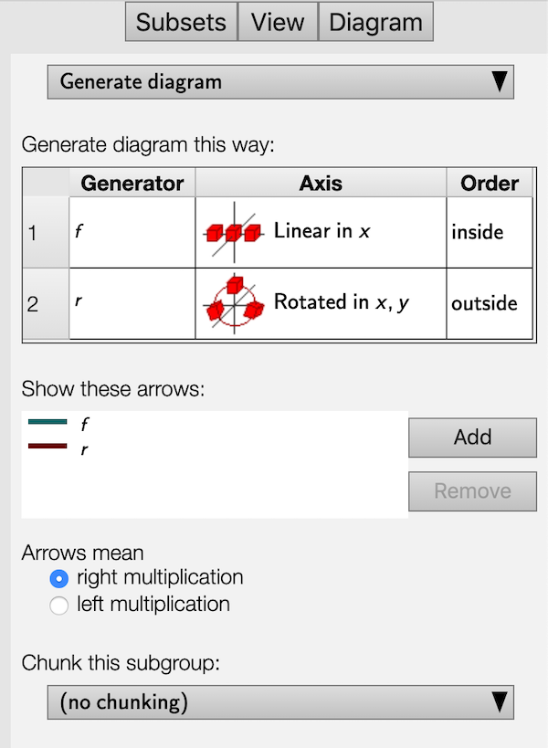
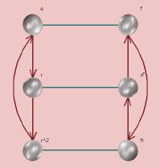
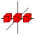
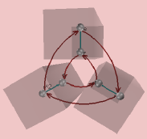
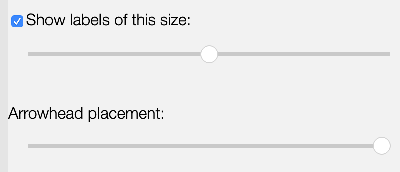

This page documents the interface for the large view of a Cayley diagram. A Cayley diagram is one of Group Explorer’s four visualizers, all of which can appear either in group info pages, sheets, or in their own pages. When they appear in their own pages, this is refered to as a “large view,” and you can read about it in general here. This page covers the specifics for large views of Cayley diagrams.

Choosing which diagram to view
There are two types of Cayley diagrams available in Group Explorer, the kind you instruct Group Explorer to construct for you and the kind that was designed in advance by the author of the group file. Most group files do not come with diagrams defined by the author, but Group Explorer can construct Cayley diagrams for any group in its library, so no group will be without a diagram.
The top of the Diagram tab (the third of the three tabs in the right hand pane) allows you to choose a diagram from a drop-down list. The items in the list are one of two types.
- The first item in the list reads “Generate diagram” and instructs Group Explorer to generate a Cayley diagram according to the instructions you provide in the other controls on the diagram page, specifically the generation table.
- The other items on the list instruct Group Explorer to load a diagram defined by the group author. In doing so, you will disable the controls for generating and chunking in the diagram.
Viewing the diagram
A Cayley diagram (unlike multiplication tables and cycle graphs) is a three-dimensional structure. Thus you can left-click and drag [one-finger drag] on the view to rotate it in three-dimensional space; you can right-click and drag [two-finger drag] to translate it; and you can use the mouse wheel [pinch open/close] to zoom in and out. This lets you see all sides of the diagram, and seeing it in motion can give you a better mental picture of it.
Changing the positions of nodes in the diagram
You can customize the appearance of any Cayley diagram by dragging the nodes in it around in three dimensions to any position you like. To drag the nodes around, hold the shift key while you click on the node and drag. [On a touch device just start a one-finger drag on the node.] It will move in the plane parallel to the screen. As you move the node you may find that it obscures some of the arcs; you can change the curvature of the arcs and arrows in the diagram to avoid this. To reset the diagram to its original configuration, simply reload the page in your browser.
Note that because chunking depends on the positions of nodes in the diagram, if you reposition the nodes in this way you may have to redisplay the chunking. Simply reselect the desired subgroup from the “Chunk this subgroup” drop-down list at the bottom of the Diagram tab to do so.
Changing the arcing of arrows in the diagram
You can customize the degree to which the arcs and arrows in the diagram are curved. Usually an arc in the diagram takes a straight path from its source node to its destination node. The exceptions to this are when the diagram is inherently round, and so the arrows follow the curvature of the diagram, or when there are nodes in the way and a curved path would avoid them.
However you can feel free to improve on Group Explorer‘s decisions in this matter by clicking in the middle of an arc in the diagram while holding down the shift key, and dragging to increase or decrease the amount of arcing it has. [On a touch device just start a one-finger drag on the arc. The arc color will change when it is selected.] You will not be able to change the direction of the arcing, only its amount.
The Diagram tab

Note that the controls panel for Cayley diagram large views has three tabs at the top: Subsets, View, and Diagram.
The Subsets tab allows you to compute and highlight subsets of the group, and the View tab allows you to change some cosmetic options of the diagram; see below for information on each of these tabs.
The Diagram tab allows you to choose a predefined diagram to view or specify parameters for how Group Explorer should construct a diagram for you. This section describes the controls on the Diagram tab.
Organizing by a subgroup
The most common way a user reorganizes a diagram is to focus on a particular subgroup. Group Explorer therefore has a shortcut for this purpose, to alleviate wading through the technical options documented below. Clicking [tapping] anywhere in the generator table brings up a menu whose last item is “Organize by.” Choosing that option lists all the subgroups by which one can organize the Cayley diagram. Selecting one reorganizes the entire generator table (and therefore the diagram) to bring together the elements in the subgroup and in each of its cosets. Further tweaking of the axes assigned to each generator may be necessary to get the diagram to look exactly the way you like, but this shortcut can save a lot of time.
It is particularly useful in examining whether a subgroup is normal. When the diagram is organized by the subgroup and its cosets, is it clear that the arrows for generators that connect one coset to another agree on where each coset should be mapped?
Generators, and assigning them priority, axes, and an order
Group Explorer takes three factors into account when generating a diagram–a list of generators for the group, an axis for each generator, and an order for nesting those axes. Each of these options is specified in the table titled “Generate diagram this way:” in the image above. Let us consider each of these options here.
A list of generators for the group
The leftmost column in the table lists generators for the group. The order is significant when the group is nonabelian. You can select new generators by clicking [tapping] on a generator and selecting a new one from the list. When you are choosing generator , only the elements not in the subgroup generated by generators 1 through are available as options. You can reorder the generators in the table by clicking a row header (numbered 1, 2, …) and dragging [one-finger dragging] it up or down.
The first step Group Explorer peforms (invisibly) when generating a Cayley diagram is to arrange the elements of the group into a grid without assigning them positions in space. Generators that are higher in the table are used to generate local regions of that grid, and those that are lower in the table are used to expand local regions to the global diagram. For instance, here is a comparison of two different choices of generators for the group . (Note that and , and we assume right multiplication in both cases.)
- Using generators and (in that order) creates an internal table that looks like the following.
-
It generates diagrams like those shown below, depending on the choice of axes.


-
Using generators and (in that order) creates an internal table that looks like
-
It generates diagrams like those shown below, depending on the choice of axes.


The following section explains the choice of axes.
An axis for each generator
The second column in the generation table shows axes graphically, one for each generator. These determine how the tables of elements discussed above will be laid out in space.
-
In each pair of diagrams above, the diagram on the left was generated by assigning:
-
the generator to the axis “linear in ,” depicted by the following icon,

-
and the generator to the axis “linear in ,” depicted by the following icon.

You can see how the arrows move vertically and the arrows move horizontally, respecting this setting.
-
-
But the diagram on the right of each pair was generated by assigning:
-
the generator to the axis “rotated in ,” depicted by the following icon,

-
and the generator to the axis “linear in ,” depicted by the following icon.
You can see how the generators are vertical at the top of the diagram, near the identity element, thus obeying the assignment to the “linear in ” axis.
-
An order for nesting the axes
Even having chosen all of the above options does not completely determine how the diagram should be laid out in space. For instance, in the round diagrams above the user chose one linear axis and one rotational axis. How did Group Explorer know to make it a ring of lines as opposed to a line of rings? The answer is that the generator was marked “inside” and the generator was marked “outside” in the order column.
Choosing different options yields different diagrams, as shown below.
A ring of lines

A line of rings
Note: If the order is changed from the default (which has the innermost generator on top, down to the outermost on bottom) then chunking will be disabled. The reason for this is that with some more complex groups, if the order of generation does not match the order of nesting of the axes, chunks could take on complex shapes that would need to twist to avoid one another. See Chunking, below.
Arrows
You can put into a Cayley diagram a set of arrows representing any element in the group except the identity. Each new set of arrows will be a different color. You can include as many or as few sets as you like, and Group Explorer automatically colors them with hues as far apart in the spectrum as it can (given how many different types of arrows you require).
Custom Cayley diagrams come with their own lists of default arrow sets, but you can still add or remove them after you have displayed the custom diagram. Auto-generated diagrams, by default, use one type of arrow for each generator in the table at the top of the Diagram tab; again, add and remove as you like.
You can also choose whether arrows indicate right multiplication by a generator or left multiplication. By default, Group Explorer assumes right multiplication and the predefined Cayley diagrams shipped with Group Explorer use right multiplication. They may look bad if you change the arrows to mean left multiplication.
You can also control the placement of arrowheads from the View tab; see below.
Chunking
When trying to visualize the cosets of a subgroup, it can be useful to have them grouped visually. This option is available in both multiplication tables and Cayley diagrams, two situations in which such an organization is possible. Chunking cosets in a Cayley diagram means wrapping them in semi-transparent boxes which group the nodes of the cosets. For example, consider the grouping of two-element cosets of the subgroup in shown below.

To choose which subgroup’s cosets should be chunked, simply choose the subgroup from the drop-down list at the bottom of the Diagram tab. Note that which subgroups are available is determined by the structure of the diagram, which is determined by the order of generators. If the generators are (in that order) then the only cosets available for chunking will be , , , and the whole group .
Note also that chunking is disabled when the order of generation of the diagram does not match the order of nesting of the axes; see more information above.
CITE(VGT-8.2 MM-4 DE-9)
Related interfaces
The controls in the Subsets tab on the right side of the large window for Cayley diagrams are described in the help page for subset controls.
The controls in the View tab on the right side of the large window for Cayley diagrams are described in the help page for three-dimensional controls, with the exception of two controls specific to Cayley diagrams, shown below.

Use the checkbox next to the phrase “Show labels of this size:” to turn on or off the text next to each node in the diagram, which labels the node with the name of the element that it represents.
The slider beneath the phrase “Show labels of this size:” decides the size of the font used in the labels. Moving the slider to the left gives small fonts, and to the right large fonts.
You can control the placement of arrowheads along arcs in the diagram by dragging the “Arrowhead placement” slider. When it is at its right extent, arrowheads are abutted against the destination node of the arc; when it is at its left extent, they are near the source node.